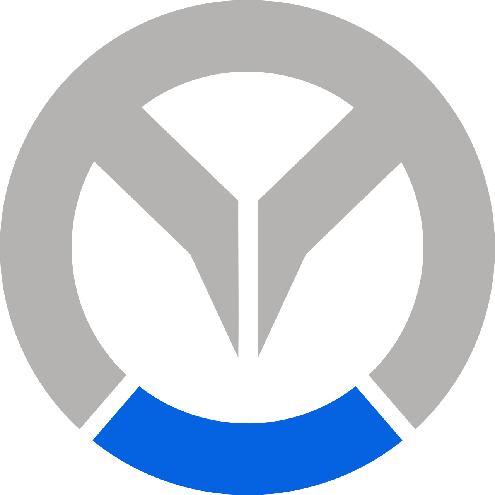

UnderignoreThe exact opposite of Overwatch, in every way. Zero players, zero heroes, zero shooting. You sit in a beige waiting room and try very hard not to be involved. Zero versus zero. Watched from underneath the floor.
Underignore is pay-to-not-play. $0.00 has been deposited into your account for not downloading it.
Version 8: the post office, a loose kid, and medals for doing the least. Updated 30 September 2026.
Assigning you a Zero. You don’t get a say in this.
There’s no picking, no switching and no rerolling. This is who you are now.
Everyone in the waiting room is earning Disinterest. Finish with the most by being as uninvolved as possible until you leave. If Excitement fills up, Undertime ends the match early.
The camera is fourth-person: you're watching from below a translucent floor. Those shapes are shoe soles. Your rank goes down as you get better, and your Zero's colour wears off the more you play.
You get a random name and one of these jobs at random, separately and permanently. The other jobs turn up in the waiting room, with random names of their own.
Searching for 0 players
Estimated wait: whenever
Everyone in a room shares one waiting room, one Point and one Excitement meter. You can notice each other, and if anyone makes things too exciting, Undertime ends it for everybody.
You get a four-letter code to share, and you start the match when everyone’s in.
Type the code your host gave you.
Everyone needs to open this same published link while signed in to Claude. The host keeps the room running, so they should keep their tab open.